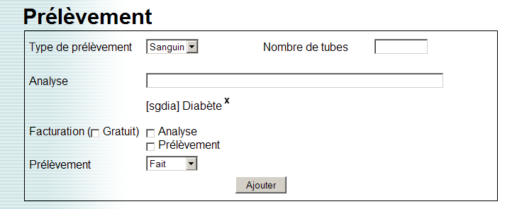
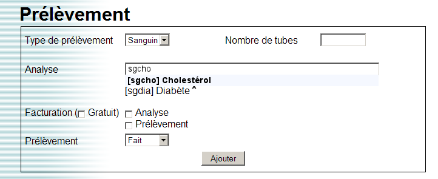
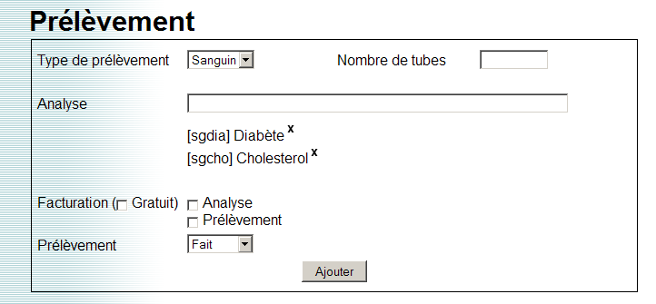

Contexte: variable liée à un dictionnaire long (commune, CIM10, ...), à choix multiple.
La sélection d’une valeur du dictionnaire se fait via un champ de recherche.
Le composant se présente sous la forme d’un champ de recherche. Dans l’exemple ci-dessous, la valeur diabète a déjà été sélectionnée.
Il est possible d’entrer plusieurs mots pour affiner la recherche. La sélection de la valeur peut se faire à la souris (clique sur la valeur), ou bien au clavier (touche entrée).
La valeur sélectionnée (ici cholestérol) est affichée sous le champ avec les autres valeurs. Il est possible de supprimer une valeur en cliquant sur la croix.
